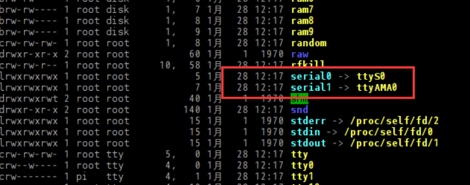
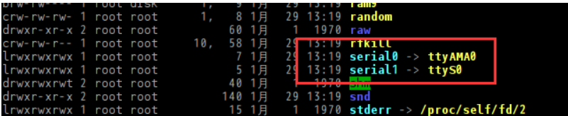

通信协议
UART串口通信
比 树莓派 零、1、2 以及 3 的双串口 UART0（PL011）和 UART1（mini UART），树莓派 4 中新增了 4 个 PL011 串口共计有 6 个 UART
执行编辑 config.txt 命令：
1 | sudo nano /boot/config.txt |
在文件结尾添加如下：
1 | dtoverlay=uart2 |
各 UART 串口与 GPIO 对应关系：
GPIO14 = TXD0 -> ttyAMA0
GPIO0 = TXD2 -> ttyAMA1
GPIO4 = TXD3 -> ttyAMA2
GPIO8 = TXD4 -> ttyAMA3
GPIO12 = TXD5 -> ttyAMA4
GPIO15 = RXD0 -> ttyAMA0
GPIO1 = RXD2 -> ttyAMA1
GPIO5 = RXD3 -> ttyAMA2
GPIO9 = RXD4 -> ttyAMA3
GPIO13 = RXD5 -> ttyAMA4
因为有额外 4 个串口可以利用，默认配置好的两串口一个用于蓝牙（UART0）另一个是 miniUART 可以保留设置
但我们一般在更改完UART串口后 对于ttyAMA0 mini串口 要更改为普通UART串口

红色框中体现的应该是一种映射关系，此处暂时没有做深究，简单理解 serial0 就是GPIO映射的串口，此时GPIO映射的串口是默认的/dev/ttyS0这个mini串口。
使用下面这条指令编辑 /boot/config.txt 文件
1 | sudo nano /boot/config.txt |
在该文件中增加一行代码
1 | dtoverlay=pi3-miniuart-bt |
然后保存文件，重启树莓派使之生效。
再通过 ls -l /dev 命令查看修改后的映射关系

对比修改前的关系，可以看出serial0和serial1 与 ttyAMA0和ttyS0的映射关系对换完成了，也就是ttyAMA0映射到了引出的GPIO Tx Rx上。
修改mini串口 参考博客
使用USB转串口通信
相较于杜邦线连接引脚，使用USB转串口通信更加利于插拔和连接稳定性。
树莓派官方系统已经集成了USB转串口驱动，我们直接连接上串口就可以使用。
建立树莓派物理、逻辑映射
为什么要建立物理逻辑映射？
因为树莓派自身是根据各个USB模块的插拔顺序来决定具体名称，在实际使用中，这非常不利于我们确定哪一个USB口对应哪一个传感器模块，经常需要打开终端查看当前模块对应了哪一个USB口逻辑名称。
注意：在建立映射时由于树莓派的USB接口会因插拔顺序不同导致名称随时改变，所以建议在只接入一个USB接口的时候更改名称。
直接一口气写在sudo nano /etc/udev/rules.d/99-com.rules的改动里（就不用一个一个去试了），而后重启
1 | SUBSYSTEM=="tty", ENV{ID_PATH}=="platform-fd500000.pcie-pci-0000:01:00.0-usb-0:1.2:1.0", SYMLINK+="ttyUSB4" |
四个USB口的命名顺序：（2022年比赛接口统一命名顺序）
I2C扩展板
i2c扩展板可以用于其他传感器的供电 拓展板与树莓派共用同一I2C地址
GPIO接口设置图